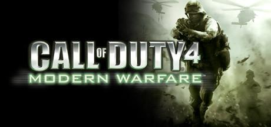

FORMATO PKG
.

Pasos a seguir:
Haz click en cada uno de los enlaces y descarga los archivos correspondientes
NOTA: El archivo Juego parte 2 tiene un ACORTADOR de PUBLICIDAD simple para apoyar al creador y es fácil de saltar.
Juego parte 1
Juego parte 2
Juego parte 3 (actualización)
Juego parte 4 (variety map pack)
Juego parte 5 (fix DLC)
Juego parte 6 (bonus maps)